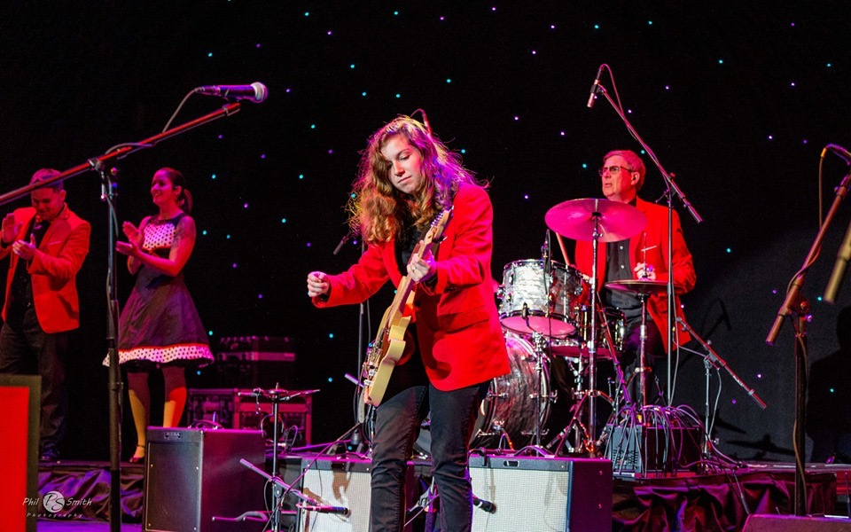

Isabel Tonelli-Sippel started studying violin with Alla Zernitskaya when she was 5 years old, then switched to guitar 6 years later. Izzy has been part of numerous groups, including the rock combo at the RI Philharmonic Music School, the Honors Jazz Band at Wachusett Regional High School, The New England Conservatory Youth Jazz Orchestra, The Bobby Gadoury Trio, Dynamite Rhythm, Rave On, the Massachusetts Central District Jazz Band, and the Massachusetts All-State Jazz Band, in which she performed at the Newport Jazz Festival. She has played alongside Mark Cutler, Duke Robillard, and Chet Williamson among others, and has performed in several musical theater pit bands across New England.
She studied guitar with Doug Williamson and Randy Vallee at Blackstone Valley Music, with Jamie Stewardson at NEC, and with Eric Hofbauer and Joe D'Angelo at Clark University. Along the way she also took drum kit, mallet percussion, voice, and trumpet lessons.
As of right now, she is availble for hire as a freelance guitarist and also offers private instruction in the Central MA and Woonsocket, RI areas. Email me at isabelTSmusic@outlook.com to inquire more.
Izzy recently graduated from Clark University with a Bachelor's of Art in Biology with minors in Computer Science and Jazz Guitar Performance. Now pursueing her Master's in Biology, she continues to work in Dr. Philip Bergmann's Functional Morphology Research Lab. Her research focuses on computational biology involving form-function relationships evolving within complex morphological systems.
